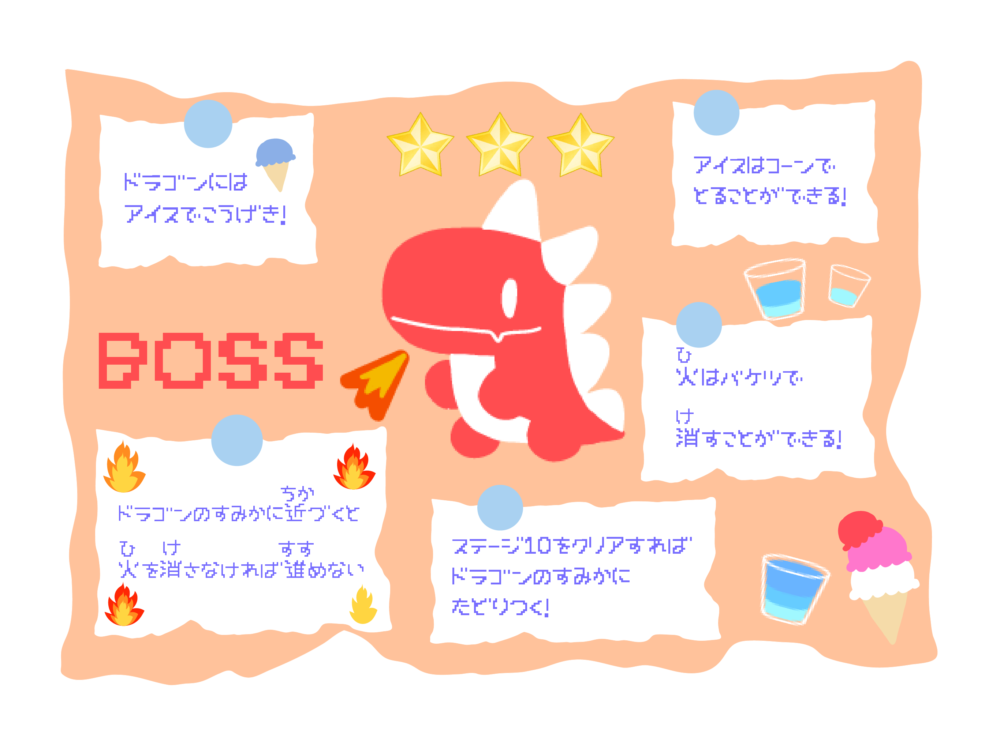
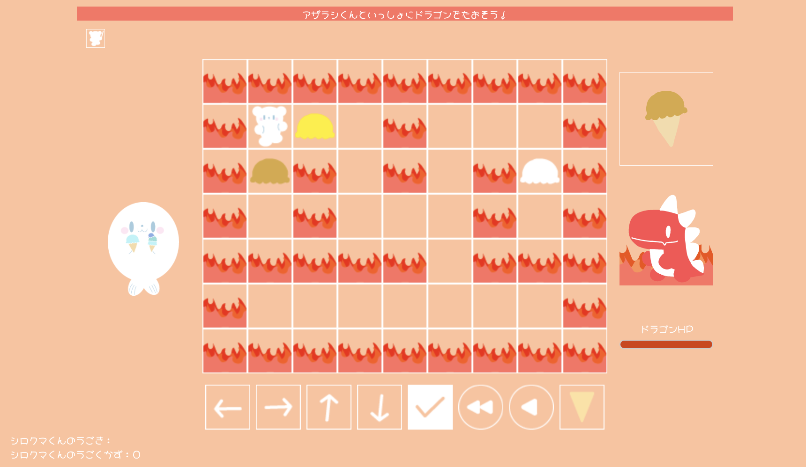

バケツの
使
つか
い
方
かた
３
シロクマくん
ついにドラゴンのすみかにたどり
着
つ
いたね！
さらにひみつノートもかんせいしたから、かくにんしてみよう！


アザラシくん
ぼくが
見
み
つけたを
使
つか
うんだね！
シロクマくん
そうだね！ドラゴンの
上
うえ
にあるアイスと
同
おな
じアイスを、
で
取
と
ろう！

アザラシくん
はどうやって
使
つか
えばいいのかな？
シロクマくん
バケツは
火
ひ
の
前
まえ
のマスで
使
つか
っていたけれど、
はのマスにいる
時
とき
に
使
つか
えるよ！
アザラシくん
バケツとはちがうから
注意
ちゅうい
だね！
シロクマくん
ドラゴンと
同
おな
じアイスを
取
と
って、
正
せい
かいすればドラゴンにこうげきしてドラゴンの
体力
たいりょく
をへらすことができるよ！
アザラシくん
アイスのじゅん
番
ばん
をよく
見
み
るよ！
シロクマくん
がんばって、ドラゴンをたおそう！
アザラシくん
お〜！
↑
次
つぎ
のステージに
進
すす
む